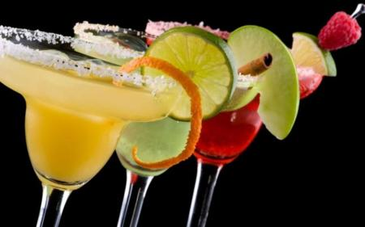

Coctelería nutricional – Drinksmotion
- Apple Fresh un cocktail que anima y revitaliza totalmente
- 20 ideas de COCKTAILS | cocteles, té helado long island, tragos
- Apple Fresh un cocktail que revitaliza | Receta | Jugo de .
- Recetas de bebidas, cócteles e infusiones - Lecturas
- 3 recetas de cócteles con té | Blog de TEASHOP
- 10 tragos veraniegos fáciles de hacer para combatir el calor .
- Cócteles orgánicos: ideas energizantes, antioxidantes y .
- Coctel de cafe, el mejor revitalizante para una noche
- Coctel de café, el mejor revitalizante de la noche. Conócelo
- Conviértete en el rey de los cócteles con estas aplicaciones
Inicio Blog Coctelería nutricional
Inicio Academia Global Service DM Embassy Newsletter Magazine Blog Contacto Log in Carrito X
Total:
PagarCoctelería nutricional
Coctelería nutricional
Aprende a preparar o pedir cócteles bajos en calorías, nutritivos y revitalizantes para ayudar a tu cuerpo y llevar una visa más saludable. El bartender Gregorio Fernández, de Barman’s University, os explica los mejores consejos.
Los cócteles elaborados con refrescos light se están poniendo de moda en Europa y Estados Unidos. Cada vez son más los locales de ocio que disponen de una carta que incluye estas combinaciones. Y es que los refrescos light , cuyo ingrediente principal es el agua, resultan muy hidratantes, apenas aportan calorías, y mezclados con diversos ingredientes se convierten en una opción muy apetecible para aquellos que quieren guardar la línea. Si además no contienen alcohol, se reduce todavía más su aporte calórico –el alcohol tiene 7 calorías por gramo-, y no tendrás problemas para volver a casa conduciendo.
Los cócteles de refrescos light no solo sirven para alternar, también puedes tomarlos con el aperitivo, la merienda, o incluso acompañando a tus comidas. Así, los entendidos aseguran que los cócteles con tónica son el maridaje ideal para los ahumados; los elaborados con refresco de naranja combinan muy bien con las brochetas de frutas, los de refresco de cola destacan el sabor de los helados y otros dulces, los que incluyen bitter resultan apropiados para los frutos secos, y los de limón potencian el sabor de pescados y mariscos. En cuanto a los cócteles que se preparan con gaseosa –que sólo aporta 1 caloría por 100 mililitros- se pueden saborear con cualquier tipo de comida.
Además, son muchas las personas que empiezan a preguntarse por lo que beben y cada vez muestran más interés por la composición de estas mezclas. En el siguiente artículo, Cocteleria Nutricional II , nos adentraremos en los beneficios que tienen este tipo de cócteles para nuestra salud.
“El secreto está en el equilibrio”
La coctelería es el arte de mezclar sabores de forma equilibrada y los refrescos son un ingrediente fundamental. La enorme variedad de sabores (cola, naranja, limón, lima-limón, gaseosa, bitter…) y de ingredientes (con o sin gas, con azúcar o edulcorantes artificiales, infusiones, hierbas aromáticas, esencias…) se pueden mezclar para convertirse en un gran número de combinados diferentes que se adapten a los gustos de cada persona.
Los barmans aconsejamos que se aprovechen las frutas y verduras de temporada para potenciar el sabor de los cócteles. En verano las fresas, los melocotones, la sandía o el melón son unos inmejorables aliados de los refrescos. También se pueden utilizar las infusiones, o las esencias como la vainilla y la canela, que le dan un toque de originalidad a las mezclas.
Claves para conseguir un buen cóctel
Toma nota de las claves y pasos necesarios para conseguir el cóctel perfecto:
·Una norma básica que debes tener en cuenta antes de empezar es que para elaborar un cóctel no debes utilizar más de cinco ingredientes. ·Es necesario buscar el equilibrio de los diversos sabores, sin que ningún ingrediente destaque especialmente. ·La base estándar para preparar un cóctel es de dos partes de ácido por una de dulce y una de amargo. ·El tipo de refresco utilizado determina qué ingredientes se pueden añadir al combinado. Si son claros, como el refresco de limón, la gaseosa o la tónica, se pueden mezclar con ingredientes espesos como el helado. Los refrescos más oscuros, como la cola o la naranja, acompañan mejor a jugos de frutas como frambuesas, moras o grosellas. ·La cantidad de refresco no debe superar nunca el 40% del cóctel. ·Las bebidas densas siempre tienen que añadirse antes de las que son más líquidas. ·Antes de echar la mezcla en el vaso o en la copa hay que introducir el hielo en cualquiera de sus formas. ·Si el refresco tiene gas se incorpora siempre al final, directamente sobre el vaso o la copa. ·Tras añadir la bebida refrescante, y antes de servir el cóctel, hay que remover los ingredientes con una cuchara mezcladora.
Además de conocer los ingredientes que se pueden utilizar para hacer cócteles light , también te conviene saber cuáles son los mejores momentos del día para disfrutar cada uno de ellos. Por ejemplo, los cócteles elaborados con refrescos light de naranja son los más adecuados para tomar a media mañana, los que incluyen bitter o tónica, que tienen un suave toque amargo, son ideales para tomar como aperitivo antes de la comida o la cena, los de cola resultan apropiados a media tarde por su sabor dulce y ligeramente a vainilla, y los de limón y gaseosa, por su capacidad refrescante, son perfectos a cualquier hora del día.
Aquí tienes unos cuantos ejemplos de sencillas y sabrosas recetas de cócteles light que puedes preparar tú mismo para sorprender a tus invitados:
Orange Light Time
Ingredientes
·Refresco de naranja light . ·2/10 de bebida de té. ·Una cucharadita de zumo de mora natural. ·Una cucharadita de zumo de grosellas natural.
Preparación
·Mezclar en una coctelera con hielo la infusión de té, el zumo de mora natural y el zumo de grosella natural. ·Batir bien y servir en copa alta con mucho hielo. ·Terminar con refresco de naranja light y agitar con cuchara mezcladora.
Raspberry Cola
Ingredientes
·Refresco de cola light . ·1/10 de helado de vainilla edulcorado. ·Una cucharadita de zumo de frambuesa natural.
Preparación
·Mezclar en una coctelera con hielo el helado de vainilla y el zumo de frambuesa. ·Batir bien y servir en copa ancha con mucho hielo. ·Añadir refresco de cola l ight y agitar antes de probar con la cuchara mezcladora. ·Decorar con una frambuesa en la copa.
Los cócteles están de moda. Y es que hay una gran variedad de refrescos ‘light’, sin apenas calorías, que se pueden combinar con otros ingredientes para conseguir nuevos y tentadores sabores. No dejes de probarlos.
Haz clic para compartir en Facebook (Se abre en una ventana nueva) Haz clic para compartir en Twitter (Se abre en una ventana nueva) Haz clic para enviar por correo electrónico a un amigo (Se abre en una ventana nueva) Posted in Sin categoríaDeja un comentario Cancelar respuesta
Relacionado
Especias, aromas y nuevas tendencias en el Mixology (x) Trend
Leer másReceta de MATE TONIC, por Matias Acevedo
Leer másCoctelería aromática y terapéutica
Leer más XNesesita una cuenta para poder finalizar su compra
Iniciar sesion Registrarse XIniciar sesion
X Aviso de privacidad2021 - TODOS LOS DERECHOS RESERVADOS
Solicitamos su permiso para obtener datos estadísticos de su navegación en esta web, en cumplimiento del Real Decreto-ley 13/2012. Si continúa navegando consideramos que acepta el uso de cookies. OK | Más información